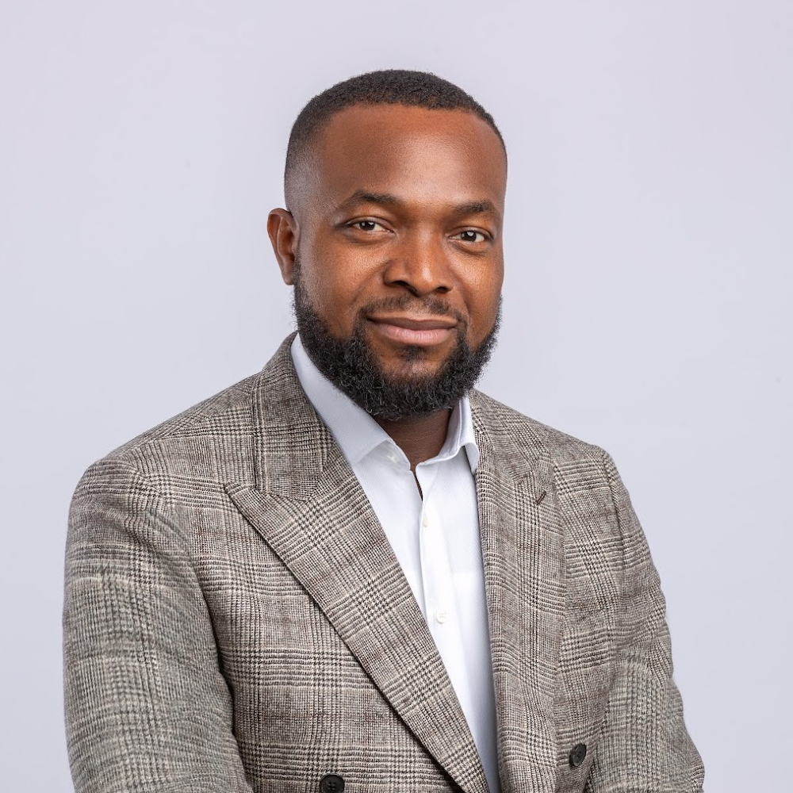
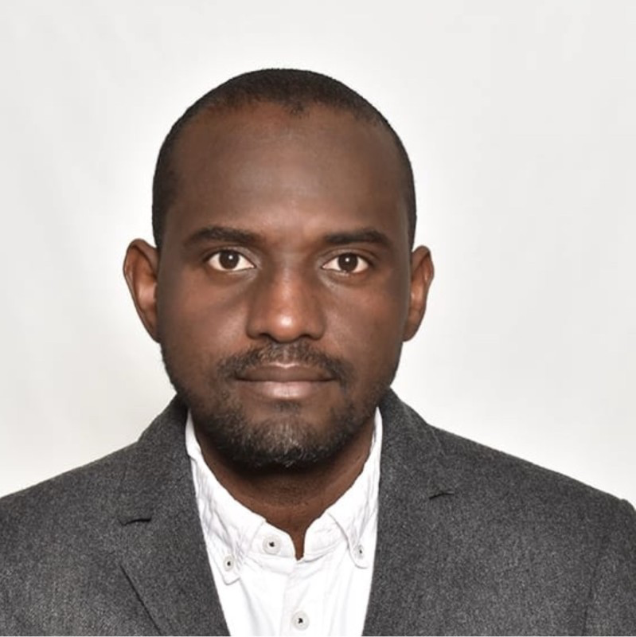
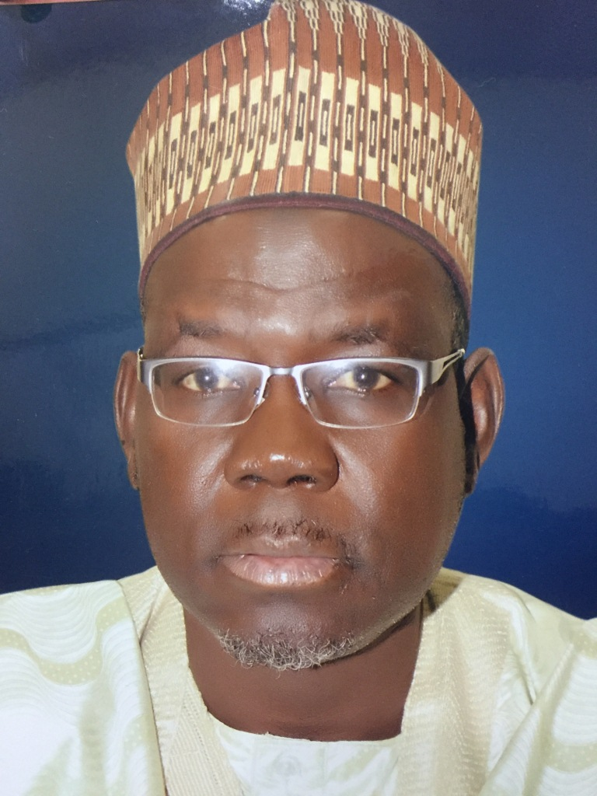
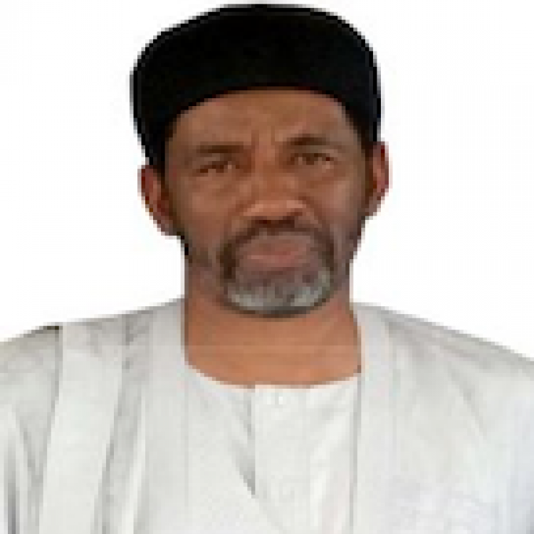
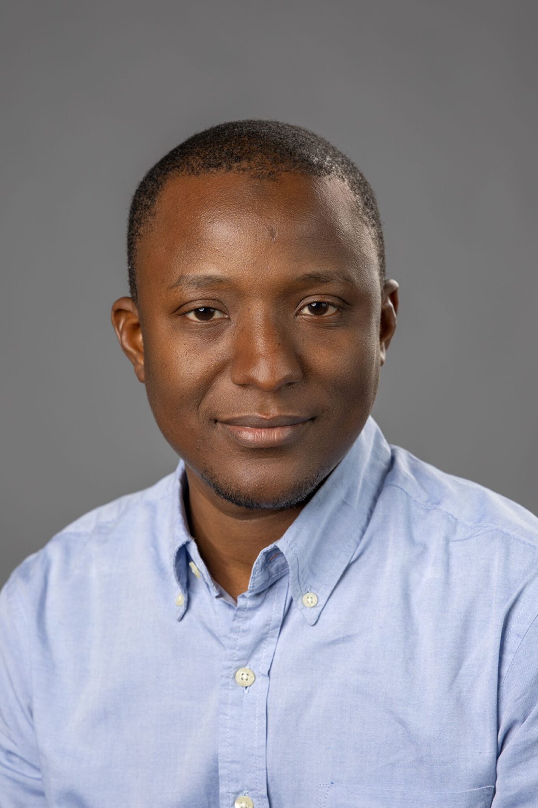
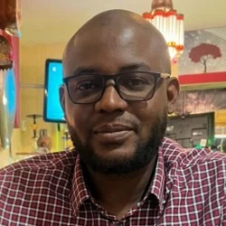
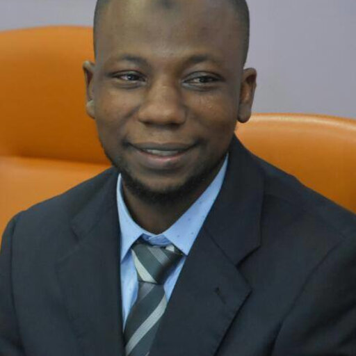

As Nigeria lays 90,000 km of new backbone, millions will meet digital services — and digital risks — for the first time. Project BRIDGE builds the safety, policy, and trust infrastructure to meet them.
A consortium of six institutions — led by Bayero University, Kano, with UK partners at York St John and Leicester — responding to the FMCIDE call on Cluster E: Trust, Safety, Consumer Protection and Online Harms.
Our team is the only one on the continent that has built large-scale hate-speech, sentiment, and safety datasets for African languages — and shipped four working platforms into real Nigerian hands.

Largest fibre-backbone investment in any developing nation. This consortium responds to the Ministry's call and stands ready to deliver the trust, safety and governance layer that makes the infrastructure matter.
Four Nigerian universities anchored in Kano and Jigawa, joined by two UK cybersecurity centres. The composition meets the Programme's four-to-six requirement and includes the encouraged international partners.
Each stream maps to the Cluster E Terms of Reference. Each produces evidence, tools, and policy guidance — not papers that sit on shelves.
Multilingual hate-speech systems for Nigerian languages; community-informed governance models; study of political polarisation in Nigerian digital space.
Map online fraud and deceptive practices; NLP detection for phishing in Nigerian languages; assess whether existing regulatory frameworks actually work.
Multi-modal continuous authentication matched to Nigerian usage patterns; policy guidance balancing fraud prevention, protection, and privacy.
Evaluate NDPA 2023 / NDPR implementation; privacy-preserving frameworks for identity, health and fintech; comparative enforcement across jurisdictions.
Assess cyberbullying and exploitation affecting Nigerian youth; evaluate digital-literacy programmes; age-appropriate safety tools in Nigerian languages.
Compare digital-safety frameworks across EU, AU, ECOWAS, UK & India; assess Nigerian agency capacity; recommend reforms that actually ship.
A team that sits at the intersection of NLP, cybersecurity, FinTech and national policy — with a former Vice Chancellor, a former State Commissioner, and Google DeepMind and Imperial College affiliations.






Most consortiums would spend Year 1 building infrastructure. Ours is already in production — giving BRIDGE a running start.
Research that doesn't reach decision-makers is an expensive hobby. Our outreach is structured around specific MDAs with concrete policy instruments.
Each shaped for specific stakeholders and timed to land at decision points.
Structured conversations with government, platforms, FinTech, civil society and development partners.
Workshops and training for government officials on digital-safety practice and evidence use.
Extending AfriHate, NaijaSenti & AfriSafe — public goods that outlast the grant.